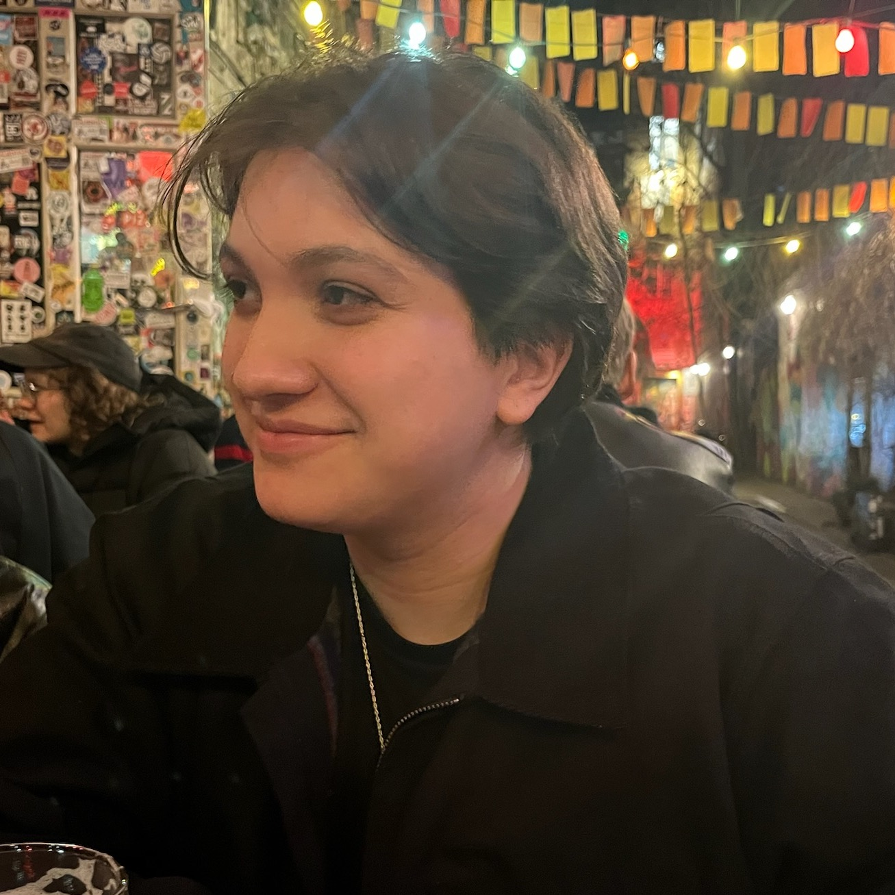

I am a New York-based aspiring archivist, graduate student in Library and Information Science at Pratt Institute, and occasional lighting designer/theater technician. I am particularly interested in collections management and digital preservation, with an emphasis on art, entertainment, and audiovisual archives. In my studies, I focus on media and entertainment, particularly in digital environments, as cultural heritage.
When I'm not working or studying, I can often be found haunting the streets of Bushwick, printing silly graphic tees, or aggressively watching Jeopardy.
